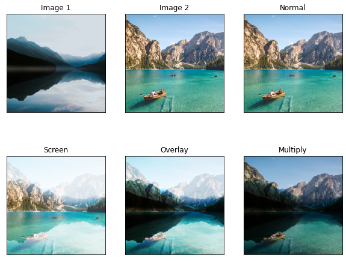

The Math of Photoshop Blend Modes
Photoshop is a wonderful tool for working with images. It is a delight to work with as a designer and it is an instrument to marvel at as a Computer Vision engineer.
But the most used feature of Photoshop (atleast for me) is the blend-modes. From time immemorial I have wondered how these work and how do they create beautiful combination of images.

In this blog we will learn the following:
- How do photoshop blend modes work?
- The math behind some blend modes
- Recreating blend modes using python
Under the hood of blend modes
To begin with, let us first try to understand what is a blend mode. The idea is to blend two different images to produce a third image. Now there are different rules for blending and each of them results in a different output image. The easiest way to think of this is as a function.
\[o = f(x,y)\]
where \[x\] and \[y\] are the input images, \[o\] is the output image, and the function is the process of blending.

Note: x and y represent color(RGB) values of the image
As we devise different functions we will create different blend modes. Sounds simple right?
Let us go through some blend modes and understand how they work:
Some simple blend modes
In this blog we will look at four simple blend modes:
- Normal
- Multiply
- Screen
- Overlay
We will also cover the mathematical intution for these modes and how to easily code them up using python. We load and display the images using OpenCV and matplotlib. For the blending operations we use numpy.
You can download the entire source code of this blogpost from here.
Normal
The first one is always the most simple one. When two images are placed over each other this mode will choose to show only the top image. Mathematically we can express this like:
\[f(x,y) = y\]
This is also called alpha-composting. It is relatively easy to code.
def normal(imgA,imgB):
# make a copy of the second image
imgBlended = np.copy(imgB)
# convert the image back into uint8
imgOut=(imgBlended*255).astype(np.uint8)
# return the blended image
return imgOutWe take two images and then create a copy of the second image. This image is passed back as output.
Multiply
Next we have the second most used blending mode. Before we go into the theory, imagine this:
You have the scanned signature of your parent and you want to place it on your leave application. You open up your image editing software and place the two images as you want them. But it does not look real. Something seems off.
This is where multiply comes in. This takes the value of each pixel of the first image and multiplies it with each corresponding pixel of the second image. The output image is darker across all pixels than either of the previous values.
Mathematically we can express this as:
\[f(x,y) = xy\]
This is also quite easy to code up.
def multiply(imgA,imgB):
# create a container for the blended image
imgBlended = np.zeros_like(imgA)
# apply the blending formula to the images
imgBlended = imgA*imgB
# convert the image back into uint8
imgOut=(imgBlended*255).astype(np.uint8)
# return th blended image
return imgOutIn the above method we first create a container to hold the blended image. Then we store the product of the two images and store it in imgBlended. It is then converted back into uint8 format and passed back.
Screen
Now the multiply blend mode makes the composite image look darker. What if we want the composite image to be brighter instead?
Yes we can simply invert what we did in the multiply blend mode to achieve that. First we invert the two images and multiply them. Then we invert the result. The formula would look something like this:
\[f(x,y) = (1-(1-x)(1-y))\]
Let us see how to express this in code:
def screen(imgA,imgB):
# create a container for the blended image
imgBlended = np.zeros_like(imgA)
# apply the blending formula to the images
imgBlended = (1-(1-imgA)*(1-imgB))
# convert the image back into uint8
imgOut=(imgBlended*255).astype(np.uint8)
# return the blended image
return imgOutIn the above method we first create a container for the output image. Then we apply the operation to the two images and store the output in imgBlended. It is then converted back into uint8 format and passed back.
Overlay
Life is not seen in only light and dark and neither are images. While darkening and brightening an image are quite useful, it is also necessary to be adaptive. Overlay brings in the best of both blending modes.
When the pixels of the first image is dark the pixels of the composite image is darker, when the pixels of the first image is light the pixels of the composite image is lighter. Usually the threshold is set at 0.5. The formula can be expressed as:
\[f(x,y) = \begin{cases} 2xy, & \text{if $x<0.5$}.\\ 1-2(1-a)(1-b), & \text{otherwise}. \end{cases}\]
Let us see how we can code this up:
def overlay(imgA,imgB):
# create a mask of the image A everywhere
# the pixels are greater than 0.5
mask = imgA >= 0.5
# create a container for the blended image
imgBlended = np.zeros_like(imgA)
# apply the blending formula to the mask
imgBlended[~mask] = (2*imgA*imgB)[~mask]
imgBlended[mask] = (1-2*(1-imgA)*(1-imgB))[mask]
# convert the image back into uint8
imgOut=(imgBlended*255).astype(np.uint8)
# return the blended image
return imgOutIn the above method we create a mask for the threshold(wherever the first image has values over 0.5). Next we create a container for the blended image and store the belnd operation values in it. For everywhere other than the mask values we apply the multiply like operation and for everywhere else we apply the screen like operation.
Source Code
You can download the entire source code of this blogpost from here.
Conclusion
There we have it! Our first batch of photoshop like blend modes are now ready. And the best thing?
We built them from scracth!
Let’s see what our result looks like:

Now, needless to say this barely scratches the surface. Real image processing applications like Photoshop have a lot going on under the hood. The calculations are much more streamlined and sophisticated. They also have an array of other blend modes.

This repository aims to faithfully replicate these calculations to some degree. The actual literature of the blnd modes used by Adobe is also provided here.
However what we learned here today gives us a good starting point to understand and minimally recreate blend-modes.